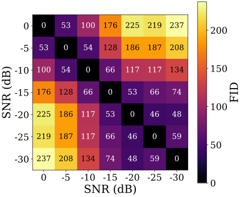
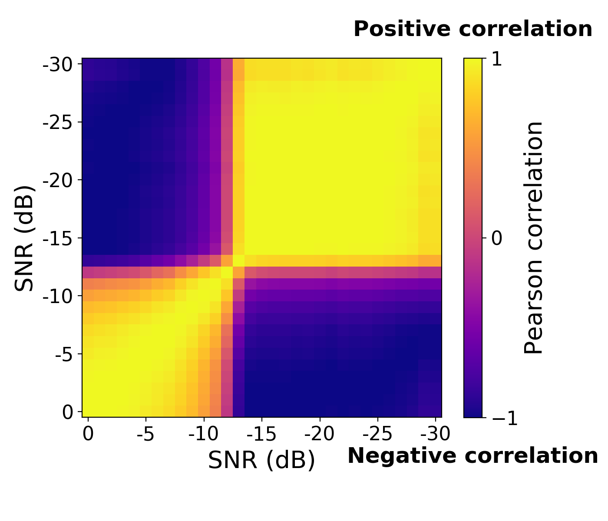
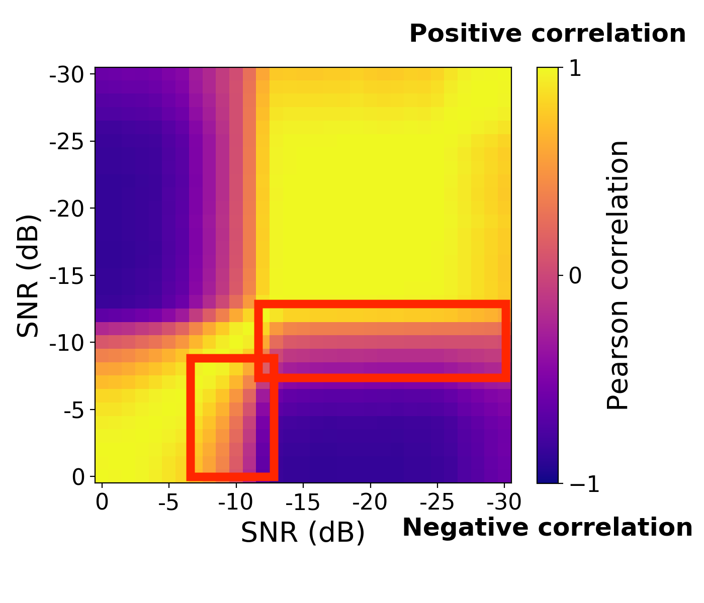
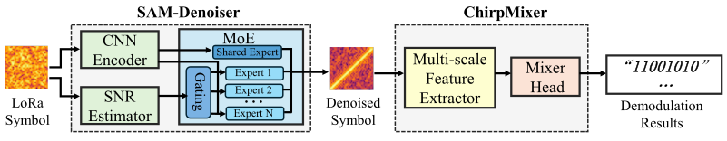
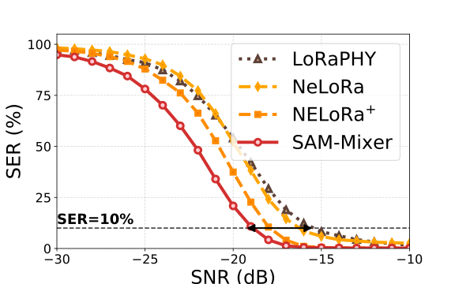
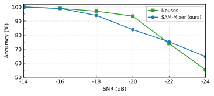

LoRa signal representations shift non-smoothly across SNR levels, and a single unified decoder is structurally unable to fit all SNR regimes at once. SAM-Mixer resolves this by routing inputs through an SNR-aware Mixture-of-Experts denoiser, followed by a lightweight chirp classifier — yielding up to 3.5 dB SNR gain over LoRaPHY at SF=7--9 with substantially fewer parameters at high SFs.
Weak-signal LoRa decoders are typically trained as a single network across all SNR levels. But how does the signal representation actually vary with SNR? We measure the Fréchet Inception Distance (FID) between time-frequency representations at different SNR levels, and find that the SNR axis splits into discrete distributional regimes rather than a smooth gradient.

The consequence is negative cross-regime transfer. The pairwise Pearson correlation of decoding accuracy across SNRs for a conventional unified neural decoder (NELoRa) shows that distant SNR regimes are anti-correlated: improving one actively degrades the other.


SAM-Mixer is an end-to-end framework with two ideas:
(i) SAM-Denoiser — an SNR-aware Mixture-of-Experts module. A lightweight SNR estimator produces a soft routing signal; a gating network selects the most relevant expert branches per input, plus a shared expert that stays active across all inputs to preserve cross-regime structure.
(ii) ChirpMixer — a lightweight chirp classifier. A multi-scale convolutional front-end extracts chirp-specific spectral features, and an axis-wise MLP-Mixer head replaces the dense fully-connected classifier, scaling linearly rather than quadratically with SF.


The same architecture, training pipeline, and hyperparameters transfer to underwater acoustic chirp detection (Neusos task) with no domain adaptation. SAM-Mixer outperforms the purpose-built Neusos baseline by +9.4 pp at the toughest −24 dB condition, suggesting that SNR-aware expert routing is a property of chirp-based communication broadly, not LoRa-specific.

The repository ships with the SF=7 checkpoint, a NELoRa-bench symbol cache, and a single-script evaluation that reproduces the LoRaPHY-vs.-SAM-Mixer comparison:
git clone https://github.com/sammixer-icnp/sam-mixer.git
cd sam-mixer
git lfs pull
pip install -r requirements.txt
python evaluate.py \
--config configs/sf7.yaml \
--weights weights/sf7.pt \
--cache data/sf7_sample.pklExpected output: SNR@10% near −18.9 dB for SAM-Mixer at SF=7. See the README for full documentation.
Citation information will be provided after the review period concludes.